¿Quiénes somos al amar? ¿Nos entrelazamos y nos identificamos en quién amamos? la serie fotográfica “La Dicha” reflexiona sobre la libertad y el amor en contextos herméticos de comunidades latinoamericanas, bajo matices blancos y negros, todo narrado en 18 imágenes.
LA DICHA
2021


Nominación a “Mejor serie fotográfica”, Concurso Nacional de Fotografía “Lente Inquieto”, La Habana, Cuba, 2021.


“EXTRAÑAR AL PRÓJIMO” DE LA SERIE “LA DICHA” Nominación “Mejor Fotografía”. Plataforma Internacional Refocus Awards. Categoría “People”. Mount Pleasant, Michigan, EUA, 2022
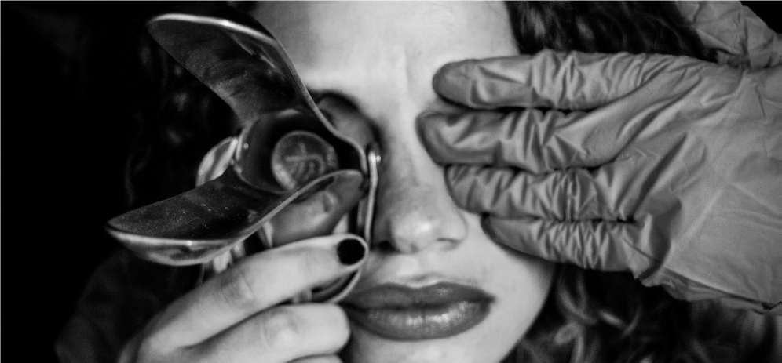
TEORÍA DE MURPHY
2020
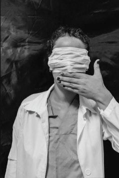
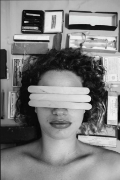
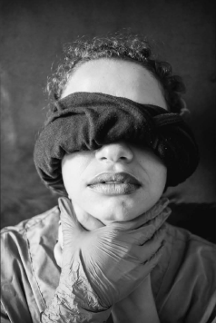
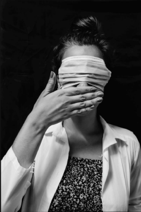
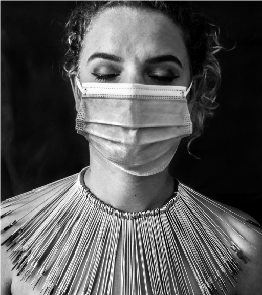
“EXTRAÑAR AL PRÓJIMO” DE LA SERIE “LA DICHA” Nominación “Mejor Fotografía”. Plataforma Internacional Refocus Awards. Categoría “People”. Mount Pleasant, Michigan, EUA, 2022
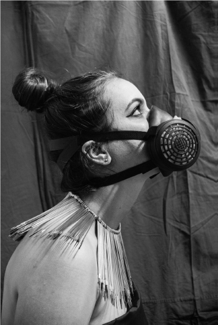
“Merit Award” en Black & White Portfolio Contest 2021, Special Issues #147. Black & White Magazine. Arroyo Grande, California, EUA, 2021
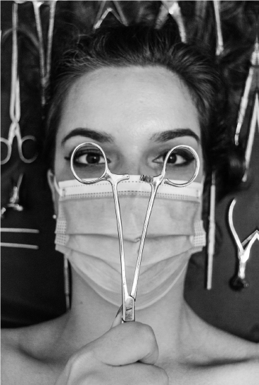
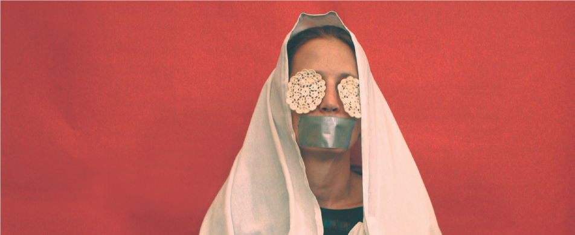
SANTÍSIMA PIEL DE LA ABYECCIÓN
Alternativa Visual del unipersonal “Apócrifas o todas son María”
grupo de teatro La Rosa
Cuba, 2017
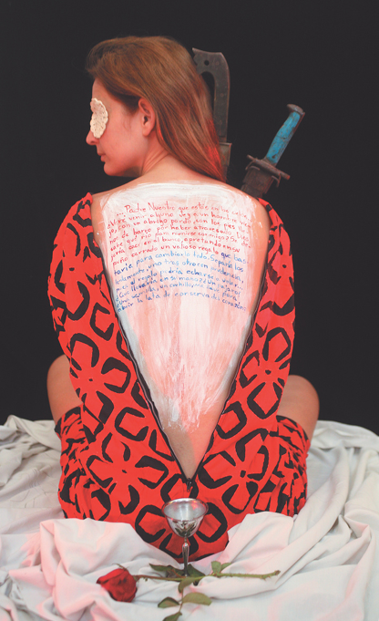
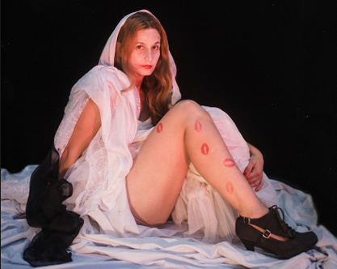
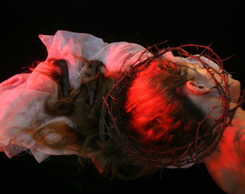
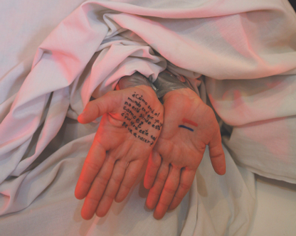
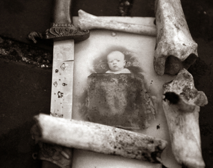
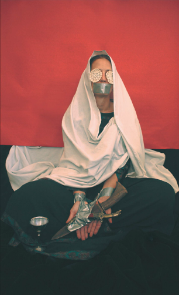
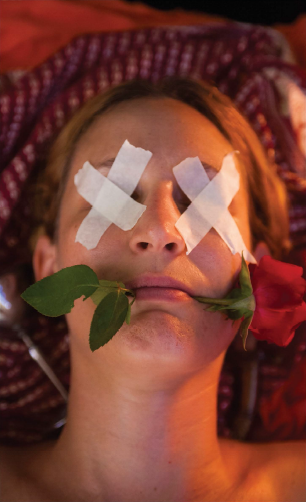
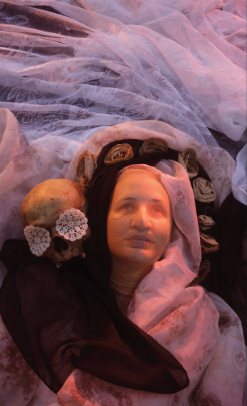
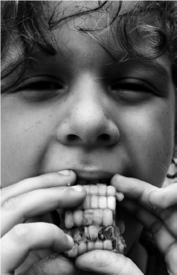
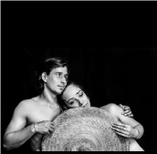
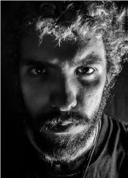
RETRATOS
FOTOGRÁFICO
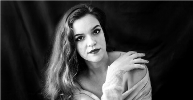
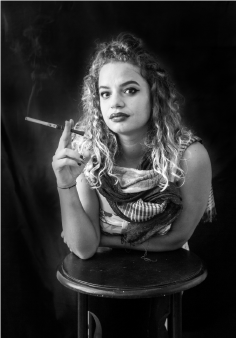
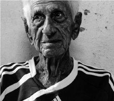
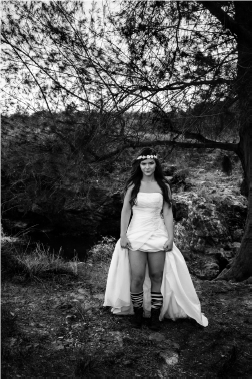
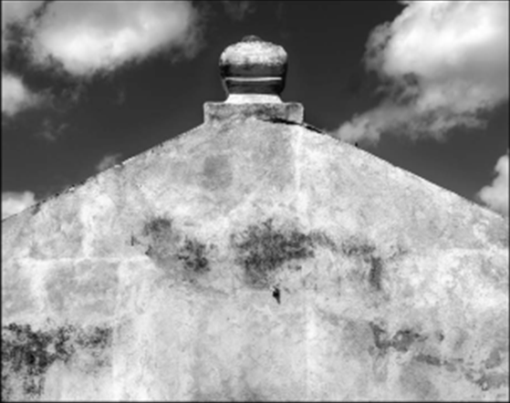
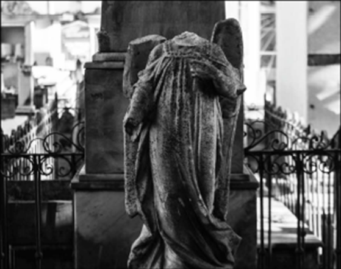
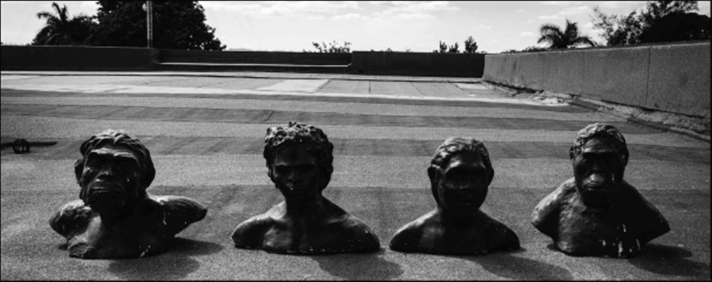
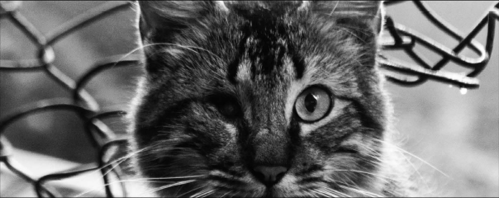